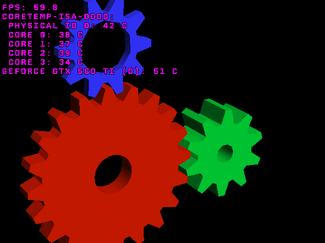
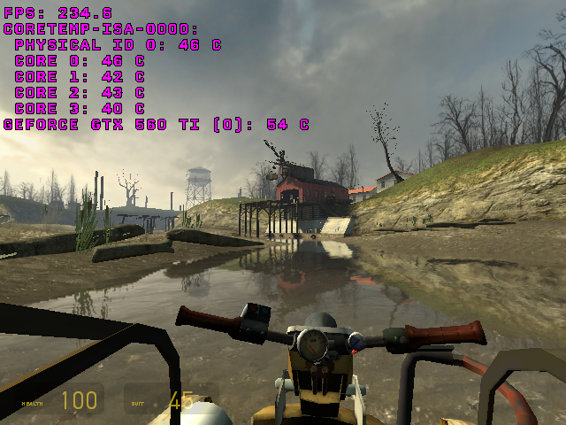

GLXOSD, a simple on-screen display/overlay for OpenGL applications running on Linux with X11
What does GLXOSD do?
GLXOSD displays information in the top left corner of the application. It can show FPS, the temperature of your CPU, and if you have an NVIDIA graphics card (with proprietary drivers), it will also show the temperature of the GPU. This project aims to provide some of the functionality that RivaTuner OSD (which is used by MSI Afterburner) provides under Windows.
-

GLXOSD displaying info in glxgears.
-

GLXOSD displaying info in Half-Life 2.This is a screenshot of a copyrighted video game. It is believed that screenshots may be exhibited under fair use. Half-Life 2 is a trademark of Valve Corporation.
Install
How do I use it?
First of all, you have to install it.
Then, to use GLXOSD you'll need to launch the application you want it to display in using the glxosd command. All you have to do is prefix the command you use to launch the application with glxosd . For example, if you want to launch glxgears, you will have to run glxosd glxgears, and if you want to run Minecraft, you'll have to run glxosd java -jar Minecraft.jar. You can easily edit the launcher for that application, meaning that you don't have to launch the game from the terminal every time.
To run GLXOSD in Steam games, right click on the game in Steam, click on "Properties", then on "SET LAUNCH OPTIONS..." and paste glxosd --steam %command% into the text box. Press "OK" and then "CLOSE" to save the settings. You can now start the game and GLXOSD should work properly inside it.
How does it work?
GLXOSD works by intercepting glXSwapBuffers and glXDestroyContext calls. It uses the dynamic linker to override the GLX implementation of these methods and call them after it has finished rendering the overlay.
Supported distros
GLXOSD has been tested on Ubuntu (12.04, 12.10 and 14.04) and Debian (Wheezy), but it should work an most distros. Multiarch is only supported when GLXOSD is installed through the Launchpad PPA. The Launchpad PPA currently contains packages for the latest GLXOSD version for Ubuntu 14.04 Trusty Tahr and packages for legacy GLXOSD versions for Ubuntu 12.04, 12.10, 13.04 and 13.10.